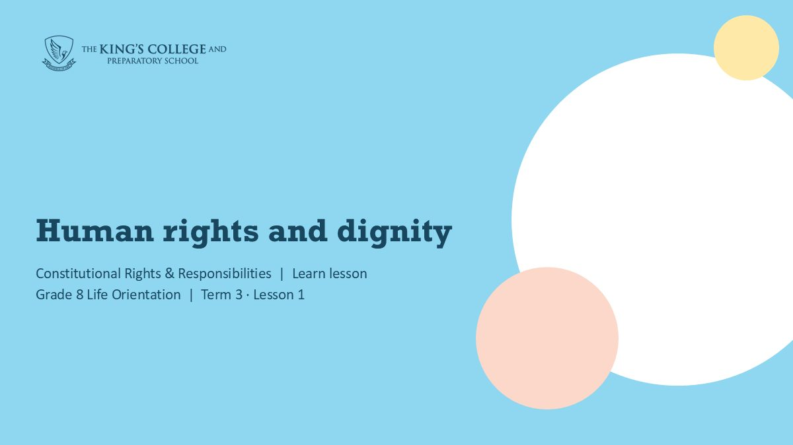

Term 3 · Lesson 1 · Learn lesson
Human rights and dignity
Start here
Today I will
- Explain why every person has dignity
- Link rights in the Bill of Rights to responsibilities
- Identify violations and ways to fight them
If you could choose only THREE rights that every person in the world must have, which would you choose?
Words to know
- Human rights
- The basic freedoms and protections that every person has, simply because they are human.
- Human dignity
- The worth and value that every person has, which must be respected.
- Bill of Rights
- Chapter 2 of the South African Constitution (1996), which lists the rights of everyone in SA.
- Responsibility
- A duty that comes with a right: what I must do so that others can also enjoy their rights.
- Human rights violation
- When a person's rights are ignored, taken away or abused.
- Counter-strategy
- An action taken to stop or fight a human rights violation.
Slides

Videos
Notes
Before 1994, millions of South Africans were denied basic rights because of their race. Today our Constitution protects the rights of everyone who lives here. Understanding where human rights come from, what they are and how to defend them helps us to build a fair country and to treat every person with the respect they deserve.
What are human rights?
Human rights are the basic freedoms and protections that every person has, simply because they are human. You don't have to earn them, and nobody gives them to you as a reward. Human rights have three important features:
- Universal: they belong to every person in the world, of every age, race, gender, religion or nationality.
- Inalienable: they cannot be taken away (although some rights can be limited in fair ways by the law).
- Indivisible: all rights are equally important and depend on one another. For example, the right to education is hard to enjoy without the right to food and safety.
Human dignity
Human dignity is the worth and value that every person has, which must be respected. It is the foundation of all other rights. Section 10 of the Bill of Rights says: 'Everyone has inherent dignity and the right to have their dignity respected and protected.' 'Inherent' means it is part of who you are; it does not depend on your marks, your money, your looks or your popularity.
Where do our rights come from?
| Date | Event | Why it matters |
|---|---|---|
| 1948 | The United Nations adopts the Universal Declaration of Human Rights (UDHR) after World War II | For the first time, the nations of the world agreed on a list of rights for every person. |
| 21 March 1960 | Police shoot and kill 69 peaceful protesters at Sharpeville | Remembered every year on Human Rights Day (21 March). |
| 1994 | South Africa's first democratic election | All adults could vote for the first time, regardless of race. |
| 1996 | The Constitution of South Africa is adopted | It is the highest law in the country. Chapter 2 is the Bill of Rights. |
Important rights in the Bill of Rights
| Section | Right | What it means for me |
|---|---|---|
| 9 | Equality | Nobody may treat me unfairly because of race, gender, religion, disability, language, culture or other grounds. |
| 10 | Human dignity | My worth must be respected and protected. |
| 11 and 12 | Life, and freedom and security of the person | Nobody may kill, hurt, abuse or threaten me. |
| 14 | Privacy | My body, home, belongings and private messages are protected. |
| 15 and 16 | Freedom of religion and of expression | I may hold and practise my faith and share my views, but not spread hate speech. |
| 24 | A healthy environment | An environment that is not harmful to my health, protected for the future. |
| 27 | Health care, food, water and social security | Access to basic needs for life. |
| 28 | Children's rights | Children (under 18) must be protected from abuse, neglect and harmful work, and their best interests come first. |
| 29 | Education | Everyone has the right to a basic education. |
Section 36 explains that rights can be limited when it is fair and necessary, for example freedom of expression does not allow someone to spread lies that harm another person's reputation.
Rights come with responsibilities
Every right comes with a responsibility. If I want my rights respected, I must respect the same rights of others.
| My right | My responsibility |
|---|---|
| Education | Come to school ready to learn, and don't disrupt other people's learning. |
| Dignity | Don't bully, mock, humiliate or insult anyone, online or in person. |
| Privacy | Don't share other people's photos, messages or personal information without permission. |
| Equality | Treat everyone fairly; don't exclude people because they are different. |
| Freedom of expression | Say what I think respectfully; don't use hate speech or spread rumours. |
| A healthy environment | Don't litter or pollute; save water and electricity. |
Human rights violations
A human rights violation happens when a person's rights are ignored, taken away or abused. Violations can be done by individuals, groups, businesses or even governments. Examples:
- Bullying and cyberbullying (violates dignity, and sometimes safety and privacy).
- Discrimination: racism, sexism, xenophobia (hatred of foreigners), or excluding people with disabilities.
- Violence and abuse, including gender-based violence and child abuse.
- Child labour: children made to work instead of going to school.
- Human trafficking: people tricked or forced into work or exploitation.
- Communities without clean water, sanitation or a safe school (rights to health, a healthy environment and education).
Counter-strategies: how to fight violations
| Counter-strategy | How it works | Example |
|---|---|---|
| Speak up and report | Tell a trusted adult, teacher, police or social worker | Reporting bullying to a teacher |
| Support the victim | Stand with the person who was hurt so they are not alone | Upstanders who sit with a learner who is excluded |
| The law and the courts | Laws protect rights; courts can order that a violation must stop | A protection order against an abuser |
| Chapter 9 institutions | Independent bodies that protect democracy and rights | The SA Human Rights Commission (SAHRC), the Commission for Gender Equality |
| Campaigns and media | Newspapers, TV and social media make violations known and put pressure on those responsible | A news story about a school with no toilets leads to action |
| Petitions, boycotts and peaceful protest | Many people together show that they will not accept the violation | International sanctions and boycotts helped to end apartheid |
| NGOs and faith organisations | Non-profit groups and churches help victims and campaign for change | Organisations that rescue children from trafficking |
A biblical view
Genesis 1:27 says God created human beings in His own image. As Christians we believe this is the deepest reason why every person has dignity: not because a law says so, but because every person reflects something of God. Proverbs 31:8–9 calls us to 'speak up for those who cannot speak for themselves' and to defend the rights of the poor and needy.
Why South Africa needed a Bill of Rights
Under apartheid (1948–1994), laws divided people by race. Black, coloured and Indian South Africans could not vote, were forced to live in certain areas, received a poorer education and could be arrested without trial. Many people suffered and some lost their lives fighting for freedom. After 1994 South Africans wanted to make sure this could never happen again. The Bill of Rights protects every person, and the Constitutional Court can strike down any law that goes against it. It is often called one of the most progressive constitutions in the world.
Types of rights
| Type | What they protect | Examples |
|---|---|---|
| Civil and political rights | Freedom and participation in public life | Life, freedom of expression, religion and movement; the right to vote and to a fair trial |
| Social and economic rights | The basic needs for a decent life | Housing, health care, food, water, education, social security |
| Environmental and cultural rights | Our surroundings and our identity | A healthy environment, language and culture |
Case study: The photo in the group chat
During a basketball match, a learner in Thabo's class slipped and fell. Someone took a photo and posted it in the Grade 8 group chat with a cruel caption. Within minutes there were dozens of laughing emojis. Thabo saw how embarrassed the learner was the next day. He remembered the lesson on dignity and privacy. He didn't add a comment; instead he posted: 'Not cool. Please delete this.' Mia and Aarav agreed in the chat, and Aarav reported the post to their register teacher. The photo was deleted, and the learner who posted it had to apologise. Later the learner who fell thanked Thabo quietly.
Questions to think about: Which rights were violated? Which counter-strategies did the three friends use? Why is it hard to be the first person to speak up, and why does it matter?
Being an upstander, not a bystander
- A bystander sees a violation and does nothing. Silence can make the person doing wrong think it is acceptable.
- An upstander does something to help, safely: speaks up, supports the victim, reports it or gets help.
- You don't have to be a hero. Even small actions (not sharing a post, sitting with someone who was excluded) protect someone's dignity.
- Never put yourself in danger: if someone is being hurt, get an adult or phone for help.
Worked exam answers
Question: Explain why every right comes with a responsibility. (1 x 2) (2)
Answer: My rights can only be protected if other people respect them, and they have the same rights as me ✓, so I must act in a way that does not take away other people's rights, e.g. not sharing their private photos ✓.
Question: Recommend ONE counter-strategy a learner can use if a classmate is bullied because of his religion. Explain how it works and what the result could be. (1 x 3) (3)
Answer: Report the bullying to a teacher ✓, who has the authority to deal with the bullies and protect the learner ✓, so that the bullying stops and the learner feels safe and respected at school ✓.
Be able to define human rights and human dignity, name the chapter that contains the Bill of Rights (Chapter 2), match a right with its responsibility, identify a violation in a scenario and recommend a counter-strategy with its result.
Every person has dignity, and my rights come with responsibilities.
If every person is made in the image of God, how should that change the way we treat someone who is very different from us?
In class: Rights in real life
- Card A: a learner's embarrassing photo is shared in a group chat without permission.
- Card B: a girl is told she can't try out for the basketball team because 'it's a boys' sport'.
- Card C: a school in a rural village has had no running water for a month.
- Card D: a boy is teased every day about his religion.
- For each card: which right is affected? Who has a responsibility? Suggest ONE counter-strategy. Share one card with the class.
Test yourself
- What does 'human dignity' mean?
- In which chapter of the Constitution is the Bill of Rights?
- Name ONE counter-strategy against a human rights violation.
Show answers
1. The worth and value every person has, which must be respected. 2. Chapter 2. 3. Any one: speak up, report it, the SAHRC, legal action, petitions, media or social-media campaigns, boycotts, peaceful protest.
Finished early?
Find out how one Chapter 9 institution protects your rights.
- On a school device, go to the SA Human Rights Commission's website, sahrc.org.za.
- Find out what the SAHRC does and how a person can ask it for help.
- In your LO book, write three facts you found, in your own words.
- Write one example of a rights violation at school that a learner could ask an adult or the SAHRC for help with.